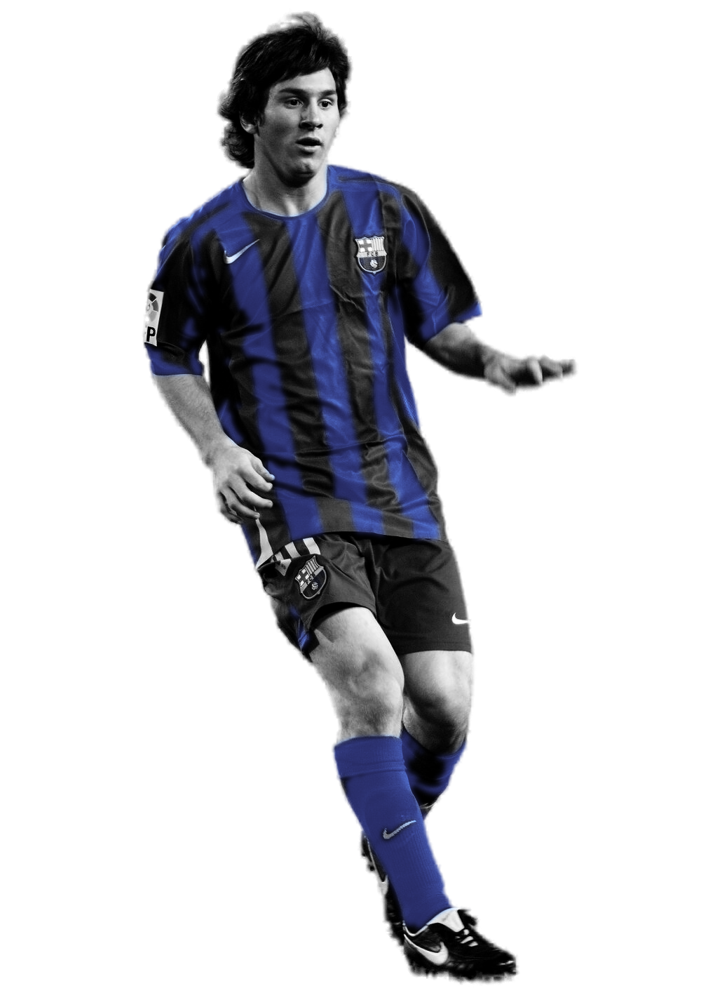
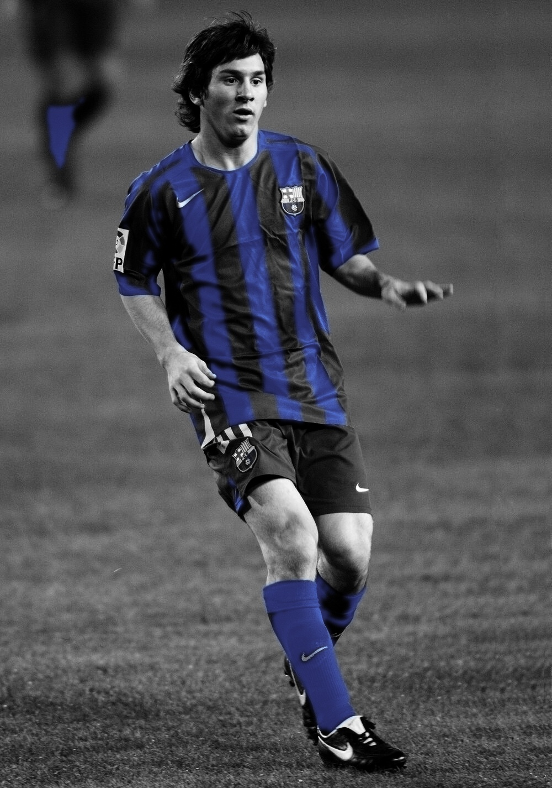

FOTO DE 2005LIONEL MESSI
Foto: Josep Tomàs, 2005 · CC BY-SA 4.0 · servilleta: recreación
BARCELONA · DIC. 2000
FICHA DE JUGADOR · RECREACIÓN
EDAD
13
2000
SEP
CALENDARIO · RECREACIÓN
SEP → DIC
SECRETARIO TÉCNICO DEL BARÇA EN 2000CARLES REXACH
Foto: Tuvu13, 2008 · CC BY 3.0
MANTEL Y SERVILLETA · RECREACIÓN
PRIMER EQUIPO

LIONEL MESSI · FOTO: 26/10/2005
Fotos: Josep Tomàs (CC BY-SA 4.0) y Tuvu13 (CC BY 3.0), modificadas, vía Wikimedia Commons.
Servilleta, mesa, calendario y fichas: recreación.